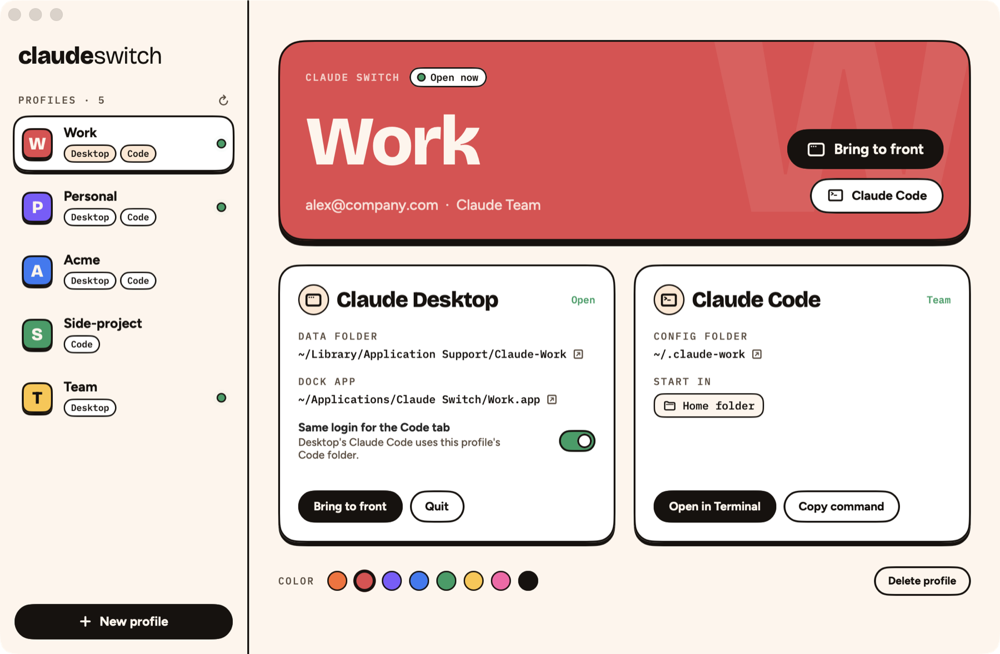

⧉
Open them all at once
Every profile is its own Claude Desktop window with its own chats and login. Cmd-Tab between them like any other app. A green dot shows what's open.
For Mac · Claude Desktop + Claude Code
Work, personal, a client. Every Claude account opens in its own window with its own login, all at the same time. No more logging out to switch.

What you get
Every profile is its own Claude Desktop window with its own chats and login. Cmd-Tab between them like any other app. A green dot shows what's open.
Each profile gets its own app with its own color and letter. Pin it to the Dock, find it in Spotlight.
Open any profile's Claude Code in Terminal, iTerm, Ghostty or Warp, signed in to the right account.
Every profile is one click away from the menu bar, without opening the app.
Desktop's Code tab and your terminal share one login per profile. Skills, settings and CLAUDE.md stay shared.
Already have profiles?
Claude Switch finds the profiles you made with Multi-Claude, Multiple Claude or our CLI, and opens them right where they are. Nothing is moved or copied. Your chats and logins stay, and the old app keeps working if you want to go back.
Set up in a minute
Work, Personal, Acme. Pick a color. Choose Claude Desktop, Claude Code or both.
Open the profile and sign in to that account. Use a private browser window so the login lands in the right profile.
From the app, the Dock, Spotlight or the menu bar. Every account stays signed in.
Pricing
No subscription, no account, no tracking. Buy it, keep it.
Mac app
Command line
curl -fsSL https://raw.githubusercontent.com/SaschaHeyer/claude-switch/main/install.sh | sh
FAQ
Yes. Claude Switch doesn't bundle or rebuild Claude. It opens the Claude Desktop app you installed from Anthropic, pointed at a separate data folder per profile. Claude Code is your own claude install with its own config folder.
Yes. Each profile is a separate Claude process with its own login, so Work and Personal can both be open. Switch with Cmd-Tab.
Claude signs in through your browser, and the browser is still signed in to the account you used last. Sign in to the new profile in a private window, or sign out of claude.ai in your browser first.
On first launch Claude Switch lists them and opens them from the same folders. Nothing is moved, copied or deleted, so your chats and logins are there, and Multi-Claude keeps working if you switch back.
Anthropic's terms let you use your own accounts, for example one for work and one for personal use. Claude Switch is for people with more than one real account. It doesn't sell, share or create Claude accounts.
No. There's no account and no analytics. Profiles live in your Library folder and your home folder, and logins stay in your macOS Keychain.
The app is Mac only. The free CLI runs Claude Code profiles on macOS and Linux.